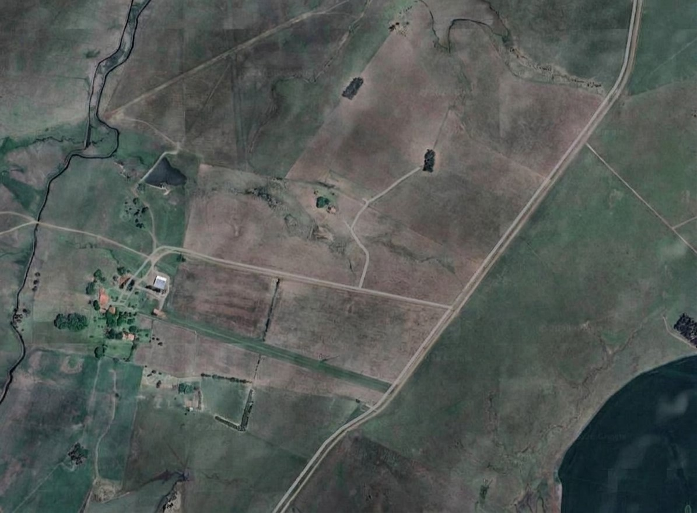

Administração do Sistema
Gestão integrada da equipe, sensores, talhões e operação de campo.
Equipe
Cadastro de Funcionários
Funcionários Cadastrados
| Matrícula | Nome | Cargo | Perfil | Status | Ações |
|---|
IoT
Gestão de Sensores
| Identificador | Talhão | Métrica | Leitura | Status | Última comunicação | Atualidade | Ações |
|---|
Historico e
situação dos talhões
Histórico de talhões e cultivos
Cada linha representa um ciclo de cultivo, ativo ou encerrado. Talhões sem plantio também aparecem. Use Ver detalhes para abrir datas, sensores, colheitas e alertas do registro.
| Talhão / cultivo | Ciclo | Área | Registros | Situação atual | Ações |
|---|
Clima Mensal
Médias mensais das leituras dos sensores.
Registrar colheita
Relatórios diários recebidos
| Selecionar | Data / recebimento | Técnico | Relatório de campo | Status | Acompanhamento | Ação |
|---|
Visão dos Talhões
Selecione um talhão para visualizar seus dados.
Edição dos limites: clique em Editar talhão para desenhar e mover os pontos. A Área em hectares é recalculada sozinha pela forma do talhão.

Normal
Atenção
Crítico
Selecionado
Normal
Detalhes: Talhão A1
Área
--
Tipo de Solo
--
Data de Plantio
--
Previsão de Colheita
--
Produto
--
Variedade Cultivada
--
Temperatura Configurada
--
Temperatura Atual
--
Umidade Atual
--
Última leitura do talhão
--
Diagnóstico da IA Preditiva
--
Última Inspeção
--
Técnico Responsável
--
Problema Apontado
--
Recomendação Tecnica
--
Planejamento Agrícola
Cadastrar Produto
Cadastre um novo produto e vincule-o a um talhão controlado pelo sistema.
Métricas dos Sensores
Histórico Anual de
Colheitas
Acompanhe o volume de produção acumulado ao longo dos anos.
ÚLTIMA COLHEITA
Média: --
--
--
MENOR COLHEITA
Média: --
--
--
MAIOR COLHEITA
Média: --
--
--